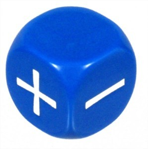

The Basics
This is version 4.. See Versioning for more information.
This site contains all the information you need to play the game. This page starts you off with a quick overview of how the game works and then jumps right into the details. After you read it, click through to the rest of the site to see the options for creating heroes and villains.
Get Started
This site provides a framework for your imagination. It has rules to help determine what happens in your stories and to resolve conflicts between characters and the challenges they face. With it, you can experience adventure as a hero fighting against the forces of evil! Any adventure you can imagine is possible.
Like all games, this one too has rules. This page looks at the basic rules of the game and how they work, giving you the foundation upon which the rest of the game is built.
This is a universal system. It does not mandate any setting, time period, genre, etc. There are examples of these and some of the rules are written from the perspective of superheroes but this system can also handle ordinary humans.
Using This Site
The best way to use this site depends on whether you plan to be a player or Gamemaster in your game. The Gamemaster creates the world in which the heroes live and controls all non-player characters (NPCs) such as thugs, cops, and supervillains, as well as the supporting cast. Each player controls a superhero he or she has created, interacting with other player characters as well as with the world and stories created by the Gamemaster.
What You Need To Play
Here's what you need to start playing this game:
- This website, which contains all of the rules necessary to create a hero and play the game.
- A character sheet (available on the Make Your Own page or via www.mutantsandmasterminds.com.)
- A pencil and some paper.
- At least three Fudge dice (which looks like ) although substitutions can be made (see below). They are available from any game or hobby retailer. You may want to have three dice for each player, or you can share them.
- Optionally, you may wish to have any kind of reference material such as Mutants & Masterminds books available from Green Ronin Publishing (but they are not required in order to play or run a game and some conversions to H&H may be necessary).
The Dice
This game uses 3 Fudge dice to resolve actions during the game. Whenever the mechanics refer to "dice" it always is referring to 3 Fudge dice. The dice is often abbreviated "3dF" (this is standard dice notation where the "F" stands for Fudge). So a rule asking you to "roll 3dF" means, "roll 3 Fudge dice."
Although 3 Fudge dice should not be too hard to obtain (they are also known as fate dice), it is also possible to substitute ordinary 6 sided dice. For a simple conversion have 1 and 2 become -1, 3 and 4 become 0, and 5 and 6 become +1.
Modifiers
Sometimes modifiers to the dice roll are specified like this: "3dF+2," meaning "roll 3 Fudge dice and add 2 to the sum of the numbers rolled." An abbreviation of "3dF-4" means, "roll the dice and subtract 4 from the result."
Players
If you're creating a hero for a game, see Character Creation for a basic overview. The following sections contain all the information you need to create your own hero. You may want to consult with your Gamemaster before creating a hero to find out what sort of series your GM is interested in running, and what types of heroes are appropriate.
Gamemasters
If you plan to be a Gamemaster, you should familiarize yourself with this whole website. Start by looking over hero creation in the Character Creation section. Then read through the Gameplay Rules section, and familiarize yourself with how to do things in the game. You may want to run a few sample combats using the example super heroes, just to get a feel for things.
Under The Hood
Throughout this website, you'll find various Under the Hood boxes. They take a look "behind the scenes" at the logic underlying design decisions and rules, and offer advice on how to handle common problems or issues that might crop up. They give you an inside look at how the game works and how to ensure you and your group get the most out of it.
The Core Mechanic
This game uses a standard, or "core," game mechanic to resolve actions. Whenever a character attempts an action with a chance of failure, do the following:
- Roll 3 Fudge dice (or 3dF).
- Add any relevant modifiers (for game traits like abilities, skills, powers, or circumstances) to the sum rolled.
- Compare the total to a number called a difficulty class (abbreviated DC).
If the result equals or exceeds the difficulty class (set by the GM based on the circumstances), the effort succeeds. If the result is lower than the difficulty class, it fails.
This simple mechanic is used for nearly everything in the game, with variations based on what modifiers are made to the roll, what determines the difficulty class, and the exact degree of success and failure.
Just remember...
3dF + modifiers vs. difficulty class... and you understand how to play most of the game!
The Gamemaster
One of the players in a game takes the role of Gamemaster (abbreviated GM). The Gamemaster is responsible for running the game--a combination of writer, director, and referee. The GM creates the adventures for the heroes, portrays the villains and supporting characters, describes the world to the players, and decides the outcome of the heroes' actions based on the roll of the dice and the guidelines given in the rules. It's a big job, but also a rewarding one, since the Gamemaster gets to develop the world and all the characters in it, along with inventing fun and exciting stories.
If you're going to be the Gamemaster, you should read through this whole website carefully. You should have a firm grasp of the rules, since you're expected to interpret them for the players to help decide what happens in the game. You'll also help the players develop their own heroes, making sure they fit into the world and have potential for exciting stories in their own right.
The Heroes
The other players in a game create heroes, the main characters of their own adventures, like an ongoing comic book or animated series. As a player, you create your hero following these guidelines and the guidance of your Gamemaster. There are several components to creating a hero, described in detail in the linked pages, and outlined briefly below.
{kind=link}
Abilities
All characters in this game, from heroes and villains to the average person on the street, are defined by eight abilities, basic traits each character has to a greater or lesser extent. Abilities tell you how strong, smart, and aware a character is, among other things. The abilities are: Strength, Agility, Fighting, Dexterity, Stamina, Intellect, Awareness, and Presence, described in detail on the Abilities page.
Each ability is assigned a rank from -5 to 20, measuring its effectiveness. A rank of 0 is unremarkable or average, applying no modifier. Rank 1 is highly skilled or gifted. A 2 is one of the best in the world, while a 3 is about the most that can be expected from a "normal" human being. Beyond that is superhuman, with a maximum rank of 20 (for power level 10). Abilities can even have negative ranks, for those well below average, as low as -5.
For more about abilities, see the Abilities page.
Skills
Abilities describe a character's raw potential or overall capabilities. Skills are a refinement of those basic abilities into specific areas of endeavor. For example, Agility defines how quick and agile your hero is, but the Acrobatics skill focuses on specific feats of agility like gymnastics, doing back flips, and so forth. Think of abilities as providing a certain baseline, while skills focus in on a particular area of expertise.
Characters are said to have training in a skill if they have a rank in that skill. A character not trained in a skill has no rank; only the character's basic ability applies to checks involving the skill. Trained characters have a skill rank that adds to the basic ability when making checks. In the previous example, we said Acrobatics skill applies to specific feats of agility. If, for example, a hero has Agility 6 and is trained in Acrobatics (with a rank of 7) then the character's bonus for checks involving feats of agility covered by Acrobatics is 13 (6 plus 7). Obviously, training in a skill makes characters more effective at checks involving that skill, often much more.
For details on what skills are available and what they do, see Skills.
Advantages
Halfway between skills and powers, advantages are minor benefits characters have, allowing them to do things others cannot. They range from special combat maneuvers to things like financial resources, contacts, and so forth.
Many advantages have no rank, or rather just one rank; a character either has the advantage (and the benefits that it grants) or does not. Other advantages may have multiple ranks, like abilities and skills, measuring their effectiveness.
For details on the various advantages and what they provide, see Advantages.
Powers
Powers are special abilities beyond those of ordinary human beings. They're like advantages, only much more so. Whereas an advantage might give your hero an unusual ability, powers grant abilities that an average human will never have (with a few exceptions).
Those abilities are based on effects, which describe what a power does in game terms. A power may have just one effect or several, and you can apply various modifiers to the effects to change how they work, customizing them to get just the right power.
Power effects have ranks like abilities and skills. Unlike abilities, effects do not have ranks of less than 1, since the "average" (generally speaking) is not having powers at all!
Powers describe effects but not all of them are superhuman. For example Movement: Swimming at rank 2 (30 feet in 6 seconds) could simply be the result of training whereas Movement: Swimming at rank 20 is an impossible speed (that would be covering 4,000 miles every 6 seconds or 2 million miles per hour). Teleport on the other hand, even at rank 1, cannot possibly be done by ordinary humans.
Some power effects require checks to use, while others operate automatically. For full descriptions of the various effects powers can have, see Powers.
Complications
Finally, heroes often have complications to overcome. Overcoming such challenges is part of what makes a real hero. Complications range from physical disabilities or personal issues to unusual vulnerabilities. You choose your hero's complications, defining some of the challenges your hero must overcome in the game. The process of dealing with complications allows your character to be more heroic, discussed later in the rules.
See Character Creation for more on complications.
Game Play
A session of the this game resembles an issue of a comic book or an episode of an animated series. The Gamemaster and the players get together and tell a story through the process of playing the game. The length of the game session can vary, from just a couple hours to several hours or more. Some adventures may be completed in a single session while others may take multiple sessions, just as some comic book stories are told in one issue while others span multiple issues, forming a story arc or mini-series. The episodic nature of the game allows you to choose when to stop playing and allows you to start up again at any time you and your friends want.
Also like a comic book, a game consists of a series of interrelated scenes. Some scenes are fairly straightforward, with the heroes interacting with each other and the supporting cast. In these cases the GM generally just asks the players to describe what their heroes are doing and in turn describes how the other characters react and what they do. There may be some improvisational acting as everyone plays out the roles of their characters. When the action starts happening, such as when the heroes are staving off a disaster or fighting villains, time becomes more crucial and is broken down into action rounds, and the players generally have to make dice rolls to see how their heroes do.
Checks
Your hero stands perched on the rooftop, looking down through the skylight. In the abandoned warehouse below, the villain throws the switch that begins lowering your hero's friends into the vat of boiling acid! You turn to the Gamemaster and say:
"I leap down, smashing through the skylight, swing over to the catwalk, kick the bad guy out of the way, then flip the switch to stop the lowering mechanism!"
How exactly do you do that in the game?
Whenever a character in a game attempts something where the outcome is in doubt, it requires a check of an appropriate trait: ability, skill, power, etc. (also known as a "trait check" or a "[fill-in trait name]" check, like a "Dexterity check," for example).
Make a check by rolling the dice, adding the appropriate rank, and comparing the result against a difficulty class (DC): if your result equals or exceeds the DC, you succeed. If it does not, then your attempt fails. Sometimes how much you exceed or fail to exceed the DC matters, but often it is simply whether you do or not that counts.
Check = 3dF + ability vs. difficulty classSo in the previous example, how many checks are there? Let's break things down and look at what the hero is doing:
"...leap down ..." Jumping down is literally as easy as falling off a log, so there's no need for a check here.
"... smashing through the skylight ..." Breaking something can require a check, but in this case--a body hurling through Plexiglas--the Gamemaster does not see a point in making one, so this is automatic, too. This is one of the ways the Gamemaster's judgment and intervention is important in the flow of the game.
"...swing over to the catwalk ..." This part of the action is a bit of a judgment call. If your hero has the Swinging movement effect (see Powers), then this is automatic. Otherwise, it might call for an Acrobatics skill check to pull it off; even then, if your hero is good enough at Acrobatics, the Gamemaster might call this a routine check and waive the need for a roll (see Routine Checks).
"...kick the bad guy out of the way ..." Here's the real crux of the hero's action. You want to hit the villain who, naturally, wants to avoid being hit. This calls for a check of your hero's Fighting ability (which Measures the ability to hit things close-up). If you decided to have your hero shoot or throw something at the villain that would be a check of Dexterity instead.
"...flip the switch back up ..." Assuming the bad guy is out of the way, this is easy, no check required. If the hero's attempt to hit the villain fails, then the hero still has to get past him in order to do this at all. So it all depends on the outcome of the Fighting check against the bad guy. If the mechanism was especially complex, the GM might ask for a check here, such as using the Technology skill to figure out how it works.
As you can see, once you break it down, checks are actually fairly simple. All the Gamemaster has to say in response to the player's declaration is: "Okay, roll a Fighting check to hit the villain," letting the rest of the description stand as what happens. Whether or not the hero is successful in stopping the trap depends on the outcome of the attack against the bad guy.
Of course, if the villain is expecting the hero, there might be another trap, such as part of the catwalk rigged to fall away under him, leaving him dangling above the acid vat and at the villain's mercy! In that case, the GM would respond to the player's description: "You smash through the skylight and swing over to the catwalk, but when you do..." and go on to describe what follows. The rest of the hero's intended action(s) are null and void, because things don't always go as planned when you're dealing with cunning supervillains!
Checks are used to resolve all outcomes so once you understand the basic concept, the rest is easy.
For detailed examples of how to use checks in the game and their effects, see Gameplay Rules.
Critical Success/failure
If you roll for any check and all 3 Fudge dice come up as +1 (for a total of +3 before modifiers), you've scored a critical success. However if all 3 Fudge dice come up as -1 (for a total of -3 before modifiers) it is a critical failure. The effect of a critical success or failure depends on the type of roll as shown in the table below. In most cases simply add or subtract 1 from the result (-4 or +4 before the other modifiers).
| Type of roll | Effect of Critical Success | Effect of Critical Failure |
|---|---|---|
| Attack | Critical Hit | Automatic failure (miss) |
| Active Defense | +1 | Automatic failure |
| Passive Defense | +1 | -1 |
| Ability/Skill | +1 | Automatic failure |
| Power | +1 | -1 |
The effects of critical success/failure is based on real life: there is no such thing as an automatic success, however mistakes can cause an automatic failure. A mistake can cause an automatic failure in the cases of an Attack, Active Defense, or Ability/Skill. Passive Defense on the other hand functions independently of the character's consciousness and therefore mistakes can't be made. The critical success of an attack is the black sheep by defying the mentioned logic (I should look into another way of doing this: ie this is subject to change).
The reason Powers don't have automatic failure is a bit harder to explain. Basically the decision to use the power is a conscious effort but the resulting effect is not and is a physics based reaction. For example a gun's attack can automatically miss however if it does hit then the Damage will always be present (even if Toughness is able to resist). Another example: using a Move Object power check to move an extra heavy object does not have a chance to exert 0 force (although it might fail the check). Strength based powers are a gray zone so the Gamemaster should decide how to handle a critical failure.
Difficulty Class
Checks are made against a difficulty class or DC, a number set by the GM, which your check must equal or exceed to achieve success. So for a task with a DC of 15 you must roll a check total (modifiers included) of 15 or greater to succeed. In some cases, the results of a check vary based on how much higher or lower the result is than the DC, known as its degree of success or failure.
Routine Checks
A check normally represents performing a task under a certain amount of pressure, in the midst of the furious action of super-heroic adventure. When the situation is less demanding, you can achieve more reliable results.
Under routine circumstances--when you are not under any pressure--instead of rolling the dice for the check, calculate your result as if you had rolled a 0. This ensures success for average (DC 0) tasks with a modifier of +0 or more. More capable characters (with higher bonuses) can succeed on more difficult checks on a routine basis: a +6 bonus, for example, means a routine check can succeed at DC 6 tasks, and achieve 2 degrees of success on average (DC 0) tasks on a routine basis.
The GM decides when circumstances are suitable for performing a task as a routine check. Certain game traits also change what tasks or situations are considered "routine" for a character. Routine checks help speed-up game play and smooth-out some of the variability of dice rolling in situations where a character would be expected to perform at a steady, reliable level. Routine checks are optional and a player may choose to roll the dice anyway in the event degree of success matters.
If a character's routine check result is not up to a task, the player still has the option to roll the dice, since the task is by definition not routine for that character. The idea behind routine checks is to eliminate dice-rolling (and possible failures) for things competent characters should be able to accomplish on a regular basis, while still having a good idea of the characters' capabilities.
Difficulty Classes
| Difficulty (DC) | Example (Skill Used) |
|---|---|
| Very easy (-10) | See something in plain sight (Perception) |
| Easy (-5) | Climb a knotted rope (Athletics) |
| Average (0) | Hear an approaching security guard (Perception) |
| Tough (5) | Disarm an explosive (Technology) |
| Challenging (10) | Swim against a strong current (Athletics) |
| Formidable (15) | Climb a wet, slippery rock-face (Athletics) |
| Heroic (20) | Overcome a sophisticated security system (Technology) |
| Super-heroic (25) | Bluff your way past wary and alert guards (Deception) |
| Nigh-impossible (30) | Open an impossibly complex lock in 1 round (Technology) |
Check Examples
| Task | Check Using... |
|---|---|
| Sock a villain in the jaw | Close Combat skill (or Fighting) |
| Climb the outside of a building | Athletics skill (or Strength) |
| Do a triple-back flip | Acrobatics skill (or Agility) |
| Find clues at a crime scene | Investigation skill (or Intellect) |
| Notice a ninja sneaking up on you | Perception skill (or Awareness) |
| Recall a particular fact | Expertise skill (or Intellect) |
| Fix a broken device | Technology skill |
| Convince someone of something untrue | Deception skill (or Presence) |
| Convince someone of something truthful | Persuasion skill (or Presence) |
Opposed Checks
Under the Hood: Using Opposed Checks
Opposed checks offer the Gamemaster a useful tool for comparing the efforts of two characters quickly and easily. This applies not only to skills, but also powers and, in some cases, abilities. If two or more characters compete at a particular task, you can resolve it with an opposed check. The character with the highest check result wins. Of course, you can play things out if you want, but sometimes it's good to be able to resolve things with a quick opposed check and move on.
As Gamemaster, if you find yourself without a particular rule to resolve a conflict or contest between characters, the opposed check is your friend. Pick the appropriate skill, power, or ability, make checks for the characters and compare the results to see how they did.
Some checks are opposed. They are made against another character's check result as the DC. Whoever gets the higher result wins. An example is trying to bluff someone. You roll a Deception check, while the GM rolls an Insight check for your target. If you beat the target's Insight check result, you succeed.
For ties on opposed checks, the character with the higher bonus wins. If the bonuses are the same either resolve it as a tie if possible or randomly determine the winner in some way such as flipping a coin or rolling a single Fudge die having one character win on positive or heads, and the other character win on tails or negative (reroll 0); decide which character is which before rolling.
Table: Opposed Check Examples
| Task | Skill | Opposed By |
|---|---|---|
| Sneak up on someone | Stealth | Perception |
| Con someone | Deception | Insight |
| Win a car race | Vehicles | Vehicles |
| Pretend to be someone else | Deception | Perception |
| Steal a key chain unnoticed | Sleight of Hand | Perception |
| Win a trivia contest | Knowledge | Knowledge |
| Break computer security | Technology | Technology |
Routine Opposition
In cases where two or more characters are actively opposing each other, both roll checks and compare the results. In some situations, however, one or more of the characters in an opposed check may not even be aware of it! For example, a guard standing watch and looking for intruders would make a Perception check to oppose any attempt at Stealth, but somebody just sitting in a park, not expecting anyone to sneak up on her, isn't specifically looking. This is a case of routine opposition, in which case the DC for the active character's check is the opposing character's modifier +0, just like the result of a routine check (previously). Defenses are never routine: they are always rolled.
Comparison Checks
In cases where a check is a simple test of one character's capability against another, with no luck involved, both participants compare their appropriate ranks. The character with the higher rank wins. Just as you wouldn't roll a "height check" to see who's taller, you don't need to make a Strength check to see who's stronger; Strength rank already tells you that.
So when two characters arm wrestle, for example, the stronger character wins. If two flying characters race, the faster character wins, and so forth. Note this does not include the use of extra effort (see Extra Effort) to temporarily increase a character's rank, which can affect the outcome of a comparison check, nor does it include things like maneuvers, tricks, or other ways of trying to affect the outcome. It assumes a straight-out comparison.
In the case of identical bonuses or ranks, each character has an equal chance of winning. Flip a coin or rolling a single Fudge die just like a tied opposed check.
Graded Checks
Much of the time a check is a simple pass-fail, it either succeeds, or it does not. In other cases, it matters just how well the check succeeded, or how badly it failed. This gradation of results is called a graded check and involves a degree of success or failure.
Start by rolling normally then subtract the difference between the 2 results (take the absolute value so that the number is always positive). Who wins the roll is determined in the same way (with a difference of 0 going to the defender). The difference is divided by 3 rounded up except that a difference of 0 is considered 1 degree (instead of 0) so 0-3 are 1 degree and 4-6 are 2 degrees. For example, a DC 10 check with a result of 13 is one degree of success, just as a result of 8 is one degree of failure.
There is no limit to the number of degrees a check may have, although more than two degrees of failure rarely matters, and some degrees of success may have no further effect beyond a certain point (once you have succeeded as well as is possible in a given situation). For example, failure on an Acrobatics check to balance means you wobble and spend that turn maintaining your balance, but don't move. Two degrees of failure mean you lose your balance and fall! After that point, further degrees of failure don't really matter.
In cases where a single degree of success or failure is sufficient, the rules simply specify "success" or "failure" without giving a degree (the degree doesn't even need to be determined). Specific types of graded checks--notably skills checks and powers like Affliction--give specific results for degrees of success and failure in their descriptions.
Circumstance Modifiers
Circumstances and Difficulty
Technically, circumstance modifiers could apply to either the check result or the difficulty class of a check, affecting the character's performance, or making the task itself easier or harder. If you want to differentiate between circumstance modifiers that affect performance versus those that modify the difficulty of a task, feel free to do so. This game applies circumstance modifiers directly to the check result because it is easier to deal with them consistently, and the game effect is the same: the chance of success changes.
Under the Hood: Circumstances
Circumstance modifiers are another useful Gamemaster tool for handling a lot of the variables that come up during game play. Specific examples are discussed throughout the rules for various types of checks. One example includes the not having the required tools, see Tools in Skills for more information.
Some circumstances make checks easier or harder, resulting in a bonus or penalty to the check. Characters in a favorable situation are said to have a circumstance bonus for the check, while those in a disadvantageous situation are said to be have a circumstance penalty.
As a general rule, apply a modifier of plus or minus 1 if the character is at a bonus or penalty, and a modifier of plus or minus 2 if the character is at a major bonus or major penalty for the check:
+/-1 for bonus/penalty +/-2 for major bonus/penaltyTeam Checks
Sometimes characters work together and help each other out. In this case, one character (usually the one with the highest bonus) is considered the leader of the effort and makes the check normally, while each helper makes the same type of check using the same trait(s) against DC 0. The helpers' individual degrees of success (and failure!) are added together to achieve the final outcome of the assistance. This can be done for attack checks in combat or each may attack separately.
Success grants the leader a +1 circumstance bonus. Three or more total degrees of success grant a +2 circumstance bonus. One degree of failure provides no modifier, but two or more impose a -1 circumstance penalty!
The GM sets the limit on how many characters can help as part of a team check. Regardless of the number of helpers, the leader's bonus cannot be more than +2 (for three or more total degrees of success) nor the penalty greater than -1 (for two or more total degrees of failure).
Team Check = +1 circumstance bonus for one total degree of success +2 circumstance bonus for three or more total degrees of success -1 circumstance penalty for two or more total degrees of failureAttack Checks
If all 3 Fudge dice come up as +1 (for a total of +3 before attack bonuses) for an attack check it always hits and may be a critical hit (see Critical Hits in Gameplay Rules for further information). But if all 3 Fudge dice come up as -1 (for a total of -3 before attack bonuses) on an attack check it always misses, regardless of the check total.
Defense Checks
The difficulty class is based on the strength of the hazard, such as the rank of an effect or the strength of a disease or poison, typically equal to the that value (like a routine check). Defense checks may be graded, with different results at different degrees.
The Action Round
When things really start happening in a game, time is broken down into six-second segments called rounds (sometimes "action rounds"). A round isn't very much time. Think of it like a page in a comic book, just long enough to go around the table once, with each hero doing something. Each character's portion of the round is called their turn.
The things you can do on your turn are broken up into actions. There are standard actions, move actions, free actions, and reactions. During your turn you can take a standard and a move action (or 2 move actions instead) along with as many free actions as you wish and as many reactions as are called for.
Standard Actions
A standard action generally involves acting upon something, whether it's an attack or using a power to affect something. You're limited to one standard action each round.
Move Actions
A move action, like the name implies, usually involves moving. You can take your move action before or after your standard action, so you can attack then move, or move then attack. You cannot, however, normally split-up your move action before and after your standard action. Move actions also include things like drawing weapons, standing up, and picking up or manipulating objects.
Free Actions
A free action is something so comparatively minor it doesn't take significant time, so you can perform as many free actions in a round as the GM considers reasonable. Free actions include things like talking (heroes and villains always find time to say a lot in the middle of a fight), dropping something, ending the use of a power, activating or maintaining some other powers, and so forth.
Reactions
A reaction is something you do (or that happens automatically) in response to something else. A reaction doesn't take any significant time, like a free action. The difference is you react in response to something else happening during the round, perhaps not even on your turn. Reactions don't count against your normal allotment of actions and you can react as often as the circumstances dictate, but only when they dictate.
Extra Effort
Heroes are sometimes called upon to perform feats beyond even their amazing abilities. This calls for extra effort. Players can use extra effort to improve a hero's abilities in exchange for the hero suffering some fatigue. The benefits of extra effort are limited by power level and thus bonus, increased rank, and strength may not always have an affect.
Using Extra Effort
Players can have their heroes use extra effort simply by declaring they are doing so. Extra effort is a free action and can be performed at any time during the hero's turn (but is limited to once per turn). At the end of your turn in which you used extra effort you become Fatigued which progresses as normal into Exhausted then Asleep (see conditions). Characters can't be compelled or controlled to use extra effort or victory points. A hero using extra effort gains one of the following benefits:
Action
Gain an additional standard action during your turn, which can be exchanged for a move or free action, as usual.
Bonus
Perform one check with a +1 circumstance bonus. This only applies to skill or defense checks and not power checks for that see Increased Rank below. This circumstance bonus bonus stacks with any other circumstance penalty (effectively negating a -1 penalty) or bonus with a maximum of +2.
Increased Rank
Increase one of your hero's power effects by +1 rank for 1 round. Permanent effects cannot be increased in this way.
Power Stunt
Temporarily gain and use another power. This temporary power lasts until the end of the scene or until its duration expires, whichever comes first. Fatigue sets in right after the effect expires. The temporary power can't have permanent duration although the Gamemaster may permit permanent duration powers to be used as a base for a temporary power. When performing a power stunt you may choose a power you have, you then gain a temporary power of your choice as long as it is explainable how it is related to the original power. The temporary power can have a max cost of 10 points higher than the original power.
If no original power was chosen then no relation needs to exist but the temporary power only has 10 points to distribute. The temporary power may be the same as the original in order to have different modifiers or descriptors. Remember that power stunts should never ruin the fun: try to avoid a dues ex machina style power that you got just because it would be convenient to get around a plot point.
Resistance
Gain an immediate additional defense check against any single ongoing effect or condition. This is the only extra effort that can be used while being compelled or controlled. If you are not being compelled or controlled this can be used any number of times on any condition no matter how long ago the condition was inflicted.
If you are being compelled or controlled, you (not the person controlling you) can choose to use extra effort to fight against control 1 more time (at any point not just when control is first attempted). This can only be done once during the time the control lasts and can't be used to resist any other condition.
Retry
Certain effects (see the Powers) require extra effort to retry after a certain degree of failure. The extra effort merely permits another attempt to use the effect; it grants no other benefits.
Speed
Increase the hero's speed rank by +1 for 1 round. If that form of movement doesn't have permanent duration then this is the same as Increased Rank above.
Strength
Increase the hero's Strength rank by +1 for 1 round.
Cost Of Extra Effort
At the start of the turn immediately after using extra effort, the hero becomes fatigued. A fatigued hero who uses extra effort becomes exhausted and an exhausted hero who uses extra effort is asleep and can't be woken up until exhausted is removed either by healing or 1 hour of sleep, after either case the hero is still asleep but can now be woken up (combat generally causes enough noise to wake someone). If you spend a victory point at the start of your turn following the extra effort to remove the fatigue, the hero suffers no adverse effects. In essence, spending a victory point lets you use extra effort without suffering fatigue but you must be fatigued at least until your next turn.
Victory Points
Whether it's luck, talent, or sheer determination, heroes have something setting them apart from everyone else, allowing them to perform amazing feats under the most difficult circumstances. In Humans & Heroes that "something" is Victory points. Spending a Victory point can make the difference between success and failure in the game. When you're entrusted with the safety of the world, that means a lot!
Victory points allow players to "edit" the plot of the adventure and the rules of the game to a degree. They give heroes the ability to do the amazing things heroes do in the comics, but with certain limits, and they encourage players to make the sort of choices heroes do in the comics, in order to get more Victory points.
Players start each in game day with 2 Victory points. During the adventure they get opportunities to earn more Victory points. Players can use various tokens (poker chips, glass beads, etc.) to keep track of their Victory points, handing them over to the Gamemaster when they spend them. The Gamemaster can likewise give out tokens when awarding Victory points to the players.
Unspent Victory points don't carry over to the next adventure; the heroes start out with 2 points again. Use them or lose them! Since Victory points are a finite resource, players need to manage them carefully, spending them at the most opportune times and taking chances to earn them through complications. Playing it "safe" tends to eliminate chances of getting more Victory points while taking risks, facing complications, and, in general, acting like a hero offers rewards that help them out later on.
Using Victory Points
Unless otherwise noted, spending a Victory point is a reaction, taking no time, and you can spend as many Victory points as you have. Characters can't be compelled or controlled to use extra effort or victory points. You can spend Victory points for any of the following:
Edit Scene
You can "edit" a scene to grant your hero an advantage by adding or changing certain details. For example, a hero is fighting a villain with plant-based powers in a scientific lab. You deduce the villain may be weakened by defoliants, so you ask the GM if there are any chemicals in the lab you can throw together to create a defoliant. The Gamemaster requires a Victory point to add that detail and says the right chemicals are close at hand. Now you just have to use them!
How much players are allowed to "edit" circumstances is up to the individual Gamemaster, but generally Victory points should not be allowed to change any event that has already occurred or any detail already explained in-game. For example, players cannot "edit" away damage or the effects of powers (Victory points already allow this to a limited degree, see the following). The GM may also veto uses of editing that ruin the adventure or make things too easy on the players. This option is intended to give the players more input into the story and allow their heroes chances to succeed, but it shouldn't be used as a replacement for planning and cleverness, just a way to enhance them.
Heroic Feat
You can spend a Victory point to gain the benefits of one rank of an advantage you don't already have until the end of your next turn (see Advantages). You must be capable of using the advantage and cannot gain the benefits of fortune advantages, only other types. If the advantage has any prerequisites, you must have them to gain the benefits of the advantage as a heroic feat.
You can spend a Victory point to be able to make a skill check untrained even though the skill can't normally be performed untrained such as Treatment. This is the same thing as gaining the Advantage Jack of All Trades for a single check.
Improve Roll
One Victory point allows you to re-roll any dice roll you make and take the better of the two rolls. You must spend the Victory point to improve a roll before the GM announces the outcome of your initial roll. You cannot spend Victory points on dice rolls made by the GM or other players without the Luck Control power.
Inspiration
You can spend a Victory point to get sudden inspiration in the form of a hint, clue, or bit of help from the GM. It might be a way out of the villain's fiendish deathtrap, a vital clue for solving a mystery, or an idea about the villain's weakness. It's up to the GM exactly how much help the players get from inspiration and how it manifests, but since Victory points are a very limited resource, the help should be in some way significant.
Instant Counter
You can spend a Victory point to attempt to counter an effect used against you as a reaction. See Countering Effects for details.
Negate Complication
You can spend one of your victory point to negate a Gamemaster-imposed complication (at the GM's discretion). This also eliminates the complication, however, so no victory points are awarded for it. If a victory point has already been awarded then it must also be spent (for a total cost of 2 victory points). The victory point can be spent to prevent the complication or to have it prematurely end depending on your timing.
Recover
You can spend a Victory point to recover faster. A Victory point allows you to immediately remove a dazed, fatigued, or stunned condition, without taking an action. Among other things, this option allows you to use extra effort (previously) without suffering any fatigue. Spending a Victory point to recover also lets you convert the asleep condition into exhausted and exhausted into a fatigued condition.
Earning Victory Points
In comic book stories, heroes often confront the villain(s) and deal with various setbacks. Perhaps the villain defeats or outwits them in the first couple scenes. Maybe one or more of the heroes have to overcome a personal problem. The villain may have a secret the heroes need to discover, and so forth. By the end of the story, the heroes have overcome these challenges and they're ready to take on the villain. Humans & Heroes reflects this kind of story structure through the awarding of Victory points. The heroes gain additional Victory points as an adventure progresses. When the going gets tough, the heroes get tougher, because they get Victory points to help them overcome future challenges. Heroes get Victory points from complications, acts of heroism, roleplaying, and being generally entertaining (this is a comic book after all). See Complications for details.